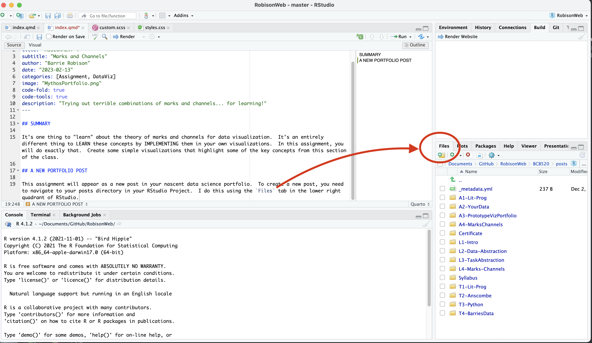

SUMMARY
It’s one thing to “learn” about the theory of marks and channels for data visualization. It’s an entirely different thing to LEARN these concepts by IMPLEMENTING them in your own visualizations. In this assignment, you will do exactly that. Create some simple visualizations that highlight some of the key concepts from this section of the class.
A NEW PORTFOLIO POST
This assignment will appear as a new post in your nascent data science portfolio. To create a new post, you need to navigate to your posts directory in your RStudio Project. I do this using the Files tab in the lower right quadrant of RStudio.

- Make a new directory within
postscalledMarksChannels. - Click on that new directory to enter it and then use that
create a new blank filebutton and choose Quarto Document. - Name the new file
index.qmd. - Add YAML text to the top of the file. In particular, add the following:
title: “ASSIGNMENT 4”
subtitle: “Marks and Channels”
author: “YOUR NAME”
date: “2023-02-14”
categories: [Assignment, DataViz]
image: “some fun image you put in that new directory.png”
code-fold: true
code-tools: true
description: “A clever description that describes the stuff”
MAKE YOUR PORTFOLIO LESS TERRIBLE
While we are at it, let’s improve the overall look and structure of your portfolio. Navigate to the about.qmd file in your portfolio root directory and open it in RStudio. Use the information found here to customize your About page.
AT MINIMUM , I want an About page that contains your name, a brief description about you, a picture of yourself, a link to your github, and a section on your Education.
MARKS AND CHANNELS
Back to your new post!
Use that shiny new index.qmd file to perform the tasks below. Every time you create a figure, it needs a caption. The text in that section of your assignment should also briefly describe the data set you are using, especially the attributes used for the visualization. In addition, make sure the visualization task actually requires the particular concept. For example, don’t just make a scatterplot with one red dot for the Popout exercise. You need to describe a task that requires we IDENTIFY that point.
Expressiveness and Effectiveness
From Munzner, 5.4.1:
The expressiveness principle: Visual encoding should express all of, and only, the information in the dataset attributes. Ordered data should be shown in a way that our perceptual system intrinsically senses as ordered. Conversely, unordered data should not be shown in a way that perceptually implies an ordering that does not exist.
The effectiveness principle: The importance of the attribute should match the salience of the channel (its noticeablity). The most important attributes should be encoded with the most effective channels.
Using whatever data set you choose, create a visualization called Figure 1 that adheres to these two principles. Write a caption that explains your choices of marks and channels in these terms. Then, using the exact same data, create a visualization called Figure 2 that violates these principles in the most extreme ways you can imagine while still having the visualization be recognizibly the same as the first. Write a caption that explains your choices of marks and channels and why they are bad compared to Figure 1.
Discriminability
Using whatever data set you choose (it need not be the same data used for Figures 1 and 2), create a visualization called Figure 3 that uses a magnitude channel a number of bins that facilitate discriminiability of an attribute. Write a caption that explains your choices of marks and channels in these terms. Then, using the exact same data, create a visualization called Figure 4 that uses this same channel for WAY TOO MANY BINS, violating the guidelines for discriminability. Write a caption that explains why this number of bins is bad compared to Figure 3.
Separability
Using whatever data set you choose (it need not be the same data used for Figures 1-4), create a visualization called Figure 5 that uses a two or more channels to encode two or more attributes while maintainig separability. Write a caption that explains your choices of marks and channels in these terms. Then, using the exact same data, create a visualization called Figure 6 that uses channels that are integral, or at least much less separable. Write a caption that explains why choosing these channels is bad compared to Figure 5.
Popout
Using whatever data set you choose (it need not be the same data used for Figures 1-6… you get the idea), create a visualization called Figure 7 that effectively uses the concept of popout. Write a caption that explains your choices of marks and channels in these terms. Then, using the exact same data, create a visualization called Figure 8 that makes the identification task in Figure 7 much more difficult. Write a caption that explains why Figure 8 sucks compared to Figure 7.